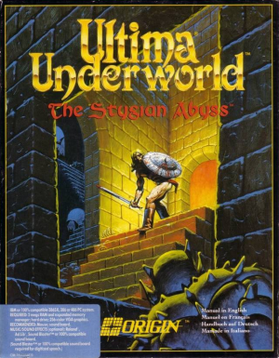

Immersive Sim · 1992
Ultima Underworld
A full 3D dungeon with physics and conversation, a year before Doom.

Cover: Wikipedia: Ultima Underworld: The Stygian Abyss
Facts
- Released
- 1992-03-21
- Genre
- Immersive Sim
- Category
- Immersive Sim
- Platforms
- PC, PlayStation
- Developers
- Looking Glass Studios
- Publishers
- Origin Systems